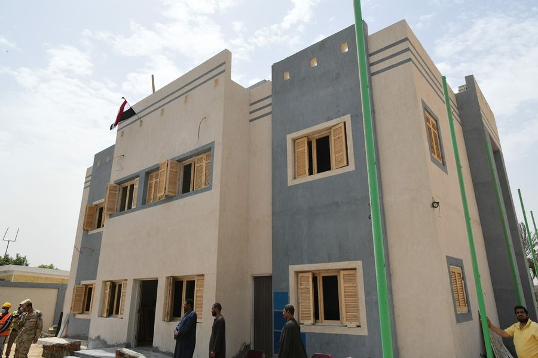

أطلق اللواء أشرف الداودي محافظ قنا، إشارة بدء التشغيل التجريبي لمحطة رفع صرف صحي قوص رقم ١ وذلك فى إطار خطة المحافظة للإرتقاء بالخدمات المقدمة للمواطنين وتوفير خدمات الصرف الصحى فى كافة مراكز المحافظة ، رافقه حازم عمر نائب المحافظ والمهندس نبيل الطيبي السكرتير العام لمحافظة قنا والمهندس رجب عرفة رئيس مجلس إدارة شركة مياه الشرب والصرف الصحى والدكتور علاء شاكر مدير وحدة تنفيذ مشروعات حياة كريمة بالمحافظة، و شاذلي البرنس رئيس الوحدة المحلية لمركز ومدينة قوص وعدد من القيادات التنفيذية. أوضح محافظ قنا أنه تم إحلال وتجديد محطة رفع صرف صحي رقم ١ بقوص بتكلفة إجمالية حوالي ٣٥ مليون جنيه علي مساحة ٢٠٠ متر مربع وتبلغ الطاقة الاستيعابية للمحطة ٤٨٠ لتر لكل ثانية وتشمل شبكة انحدار بطول ٧٥ كيلو متر ، بينما يبلغ عدد المستفيدين منها حوالي ٧٠ الف نسمة من أهالي مدينة قوص و قري الوحدة المحلية لجراجوس. وأضاف الداودي أن محافظة قنا تعمل على تأسيس كامل للبنية التحتية لكافة خطوط الصرف الصحى، وتوصيله لكافة القرى والمراكز خاصة أن مشروعات المياه والصرف الصحى يعتبر من أهم المشروعات التنموية وإحدى الركائز الأساسية للتنمية المستدامة التى تعطى لها المحافظة أولوية خاصة لتنفيذها. ومن جانبه قال رئيس مجلس إدارة شركة مياه الشرب والصرف الصحى أن هناك تنسيق دائم وتعاون مستمر مع الجهات التنفيذية بالمحافظة للنهوض بمجالي مياه الشرب والصرف الصحي سواء من خلال إنشاء محطات جديدة أو إحلال و تجديد للمحطات القديمة، بهدف تحسين الخدمات المقدمة للمواطنين ضمن خطة التنمية المستدامة ورؤية مصر 2030.
بتكلفة ٣٥ مليون جنيه .. محافظ قنا يفتتح محطة صرف صحي قوص
أطلق اللواء أشرف الداودي محافظ قنا، إشارة بدء التشغيل التجريبي لمحطة رفع صرف صحي قوص رقم ١ وذلك فى إطار خطة المحافظة للإرتقاء بالخدمات المقدمة للمواطنين وتوفير خدمات الصرف الصحى فى كافة مراكز المحافظة ، رافقه حازم عمر نائب المحافظ والمهندس نبيل الطيبي السكرتير العام لمحافظة قنا والمهندس رجب عرفة رئيس مجلس إدارة شركة مياه الشرب والصرف الصحى والدكتور علاء شاكر مدير وحدة تنفيذ مشروعات حياة كريمة بالمحافظة، و شاذلي البرنس رئيس الوحدة المحلية لمركز ومدينة قوص وعدد من القيادات التنفيذية. أوضح محافظ قنا أنه تم إحلال وتجديد محطة رفع صرف صحي رقم ١ بقوص بتكلفة إجمالية حوالي ٣٥ مليون جنيه علي مساحة ٢٠٠ متر مربع وتبلغ الطاقة الاستيعابية للمحطة ٤٨٠ لتر لكل ثانية وتشمل شبكة انحدار بطول ٧٥ كيلو متر ، بينما يبلغ عدد المستفيدين منها حوالي ٧٠ الف نسمة من أهالي مدينة قوص و قري الوحدة المحلية لجراجوس. وأضاف الداودي أن محافظة قنا تعمل على تأسيس كامل للبنية التحتية لكافة خطوط الصرف الصحى، وتوصيله لكافة القرى والمراكز خاصة أن مشروعات المياه والصرف الصحى يعتبر من أهم المشروعات التنموية وإحدى الركائز الأساسية للتنمية المستدامة التى تعطى لها المحافظة أولوية خاصة لتنفيذها. ومن جانبه قال رئيس مجلس إدارة شركة مياه الشرب والصرف الصحى أن هناك تنسيق دائم وتعاون مستمر مع الجهات التنفيذية بالمحافظة للنهوض بمجالي مياه الشرب والصرف الصحي سواء من خلال إنشاء محطات جديدة أو إحلال و تجديد للمحطات القديمة، بهدف تحسين الخدمات المقدمة للمواطنين ضمن خطة التنمية المستدامة ورؤية مصر 2030.
محافظ قنا يفتتح إحلال وتجديد محطة مياه جزيرة مطيرة
عقد اللواء أشرف الداودى محافظ قنا اجتماعا موسعا، وذلك لمناقشة الموقف التنفيذى لمشروعات المرحلة الأولى من المبادرة الرئاسية حياة كريمة ، والإستعداد لتنفيذ المرحلة الثانية من المبادرة ، بحضور حازم عمر نائب المحافظ ، والعميد وليد محمد المشرف على تنفيذ مشروعات حياة كريمة بقنا ، و محمد صلاح أبو كريشة السكرتير العام المساعد للمحافظة ، والعميد محمود وحيد ممثل الهيئة الهندسية للقوات المسلحة ، وجميع القيادات التنفيذية بالمحافظة . فى بداية الاجتماع وجه محافظ قنا الشكر للهيئة الهندسية للقوات المسلحة ، والأجهزة التنفيذية بالمحافظة ، لدورهم البارز فى تحقيق معدلات تنفيذ مشروعات المرحلة الأولى من المبادرة الرئاسية حياة كريمة، وخلال الإجتماع قام العميد وليد محمد بعرض الموقف التنفيذى للمشروعات الجارى تنفيذها تحت إشراف الهيئة الهندسية للقوات المسلحة ، والبالغ عددها ٥٩٦ مشروع ، لافتا إلى أنه تم الإنتهاء من ١٠٧ مشروع منهم ، كما استعرض بعض التحديات البسيطة، وعلى الفور وجه محافظ قنا الأجهزة التنفيذية بتذليل العقبات ، حتى يتسنى للشركات المنفذة الإلتزام بالجدول الزمنى المقرر لتلك المشروعات . كما ناقش الداودي الاستعدادات لتنفيذ المرحلة الثانية من المبادرة ، المقرر تنفيذها فى مركزى قنا ونجع حمادى ، مشيرا إلى أن الأجهزة التنفيذية انتهت من تحديد المشروعات المقترح تنفيذها فى مختلف القطاعات الخدمية ، طبقا لما تم رصده على أرض الواقع من احتياجات ، بما يعود بالنفع والفائدة على أهالى القرى المستفيدة ، لافتا إلى أنه تم توفير عدد كبير من قطع الأراضى اللازمة لتنفيذ تلك المشروعات ، وجارى توفير قطع الأراضى المتبقية ، مؤكدا أن المرحلة الثانية من المبادرة الرئاسية سوف تسهم فى إحداث طفرة كبيرة على مستوى الخدمات بصورة مماثله لما تشهده حاليا قرى المرحلة الأولى . وأكد " الداودى " أن المحافظة لاتدخر جهدآ في تقديم أوجه الدعم اللازم لتذليل أيه معوقات قد تعرقل انتظام العمل بالمشروعات المختلفة ، مشيرا إلى أن المحافظة استفادت من الخبرات التى تم اكتسابها خلال تنفيذ المرحلة الأولى .
خلال اجتماع موسع.. محافظ قنا يتابع تنفيذ المرحلة الأولى

واصل اللواء أشرف الداودى محافظ قنا ، جولته التفقدية صباح اليوم بمركز ابو تشت بتفقد عدد من المشروعات الخدمية التى يجرى تنفيذها ضمن مبادرة حياة كريمة بقرية أبوشوشة ، لمتابعة أعمال التشطيبات النهائية والإطمئنان على انتظام معدلات التنفيذ ، رافقه حازم عمر نائب المحافظ ، والعميد وليد محمد المشرف على تنفيذ مشروعات حياة كريمة بمحافظة قنا ، والمقدم أشرف السيد مدير مشروعات حياة كريمة بمركز أبوتشت ، المهندس رجب عرفة رئيس مجلس إدارة شركة مياه الشرب والصرف الصحى بقنا ، وأحمد السيد وكيل وزارة التموين ، والدكتور راجى تاوضروس وكيل وزارة الصحة ، والمهندس أشرف عبدالرازق وكيل وزارة الزراعة ، وحسن عثمان وكيل مديرية التضامن الإجتماعى ، والدكتور ابراهيم يوسف مدير مديرية الطب البيطرى ، والدكتور علاء شاكر مدير وحدة متابعة تنفيذ مشروعات حياة كريمة بالمحافظة ، والدكتور قدرى الشعينى رئيس الوحدة المحلية لمركز ومدينة أبوتشت . إستهل المحافظ جولته بتفقد مركز شباب الخوالد بأبوشوشة ، والذى يقع على مساحة ٥٤٢٥ م ، منها ١٥٠ م للمبنى الإدارى ، و ٤٥٠٠م ملعب كرة قدم يصلح للعب مباريات دورى الدرجة الثالثة لكرة القدم ، وباقى المساحة عبارة عن مساحات خضراء . وقال محافظ قنا، أن المبنى الإدارى يتكون من طابقين ، ويضم صالة العاب ، وغرفة تنس طاولة ، وغرفتين للأنشطة ، وجيم ، وحمامات منها حمام مجهز لذوى الإحتياجات الخاصة ، بنسبة تنفيذ الأعمال الإنشائية ٨١٪ ، بتكلفة مالية تصل إلى ٦ ملايين و ٥٠٠ ألف جنيه ومن المقرر الإنتهاء من تنفيذه فى ٣٠ إبريل الجارى . وتابع " الداودى " جولته بتفقد نقطة إسعاف الخوالد بأبوشوشة ، المقامة على مساحة ٢٤٥م ، وتم الإنتهاء من تطويرها بالكامل بنسبة ١٠٠٪ ، بتكلفة مالية بلغت مليون و ٩٠٠ الف جنيه ، و تضم جراج يستوعب سيارتىّ إسعاف ، ومبنى إدارى يضم غرفة IT ، وصيدلية ، وإستراحة أطباء ، و سوف تخدم الطريق الزراعى، و أهالى القرية للتعامل الفوري والسريع مع أى حدث طارئ وعمل الإسعافات الأولية للمصابين أثناء نقلهم للمستشفى لإستكمال العلاج ، مشيرا إلي أن الإسعاف يمثل بداية الطريق للوصول إلى مستوى صحي متميز لأن وجود سيارات مجهزة ومسعفين على مستوى عال من التدريب يضمن تقديم العلاج لمرضى ومصابي حالات الطوارئ وإنقاذ حياتهم قبل دخولهم المستشفى . كما تفقد " الداودى " وحدة طب الأسرة ببنى برزة ، والتى تم تطويرها ضمن مبادرة حياة كريمة بتكلفة مالية مليون و ١٤٦ الف جنيه ، مشيرا إلى أن الوحدة مقامة على ٤٠٠م ، وتخدم أهالى قرية بنى برزة . وأضاف " الداودى " أن مبادرة حياة كريمة تستهدف تنفيذ ٢٧٣ مشروع فى مختلف القطاعات الخدمية بمركز أبوتشت ، بنسبة ٤٠٪ من إجمالى المشروعات المستهدفة خلال المرحلة الأولى من المبادرة ، وهو ما يعكس حجم الإستفاده التى ستعود على أهالى المركز من حيث تحسن مستوى الخدمات المقدمة لهم بعد الإنتهاء من تنفيذ هذه المشروعات . وعلى هامش الجولة تابع محافظ قنا سير العملية التعليمية بمدرسة الخوالد ذات الفصل الواحد ، وهنأ الطلاب والقائمين على العملية التعليمية بمناسبة شهر رمضان المبارك ، متمنيا لهم التوفيق والنجاح .
محافظ قنا يتابع سير العمل بعدد من مشروعات حياة كريمة بأبوتشت
وسط فرحة عارمة من الأهالى ، إفتتح اللواء أشرف الداودي محافظ قنا ، محطة مياه عوامر بنى برزة بمركز أبوتشت التي تم إنشائها ضمن المبادرة الرئاسية "حياة كريمة ، وذلك بحضور حازم عمر نائب المحافظ ، والعميد وليد محمد المشرف على تنفيذ مشروعات حياة كريمة بمحافظة قنا ، والمقدم أشرف السيد مدير مشروعات حياة كريمة بمركز أبوتشت ، والمهندس رجب عرفة رئيس مجلس إدارة شركة مياه الشرب والصرف الصحى بقنا ، وأحمد السيد وكيل وزارة التموين ، والمهندس أشرف عبدالرازق وكيل وزارة الزراعة ، وحسن عثمان وكيل مديرية التضامن الإجتماعى ، والدكتور ابراهيم يوسف مدير مديرية الطب البيطرى ، والدكتور علاء شاكر مدير وحدة متابعة تنفيذ مشروعات حياة كريمة بالمحافظة ، والدكتور قدرى الشعينى رئيس الوحدة المحلية لمركز ومدينة أبوتشت ، وعدد من أهالى القرى المستفيدة من المحطة . قال محافظ قنا أن المحطة مقامة على مساحة ١١٠٠م ، بطاقة إنتاجية ٦٠ لتر / ثانية ، و تتكون من وحدتين نقالى طاقة كل منهما الإنتاجية ٣٠ لتر / ثانية ، بتكلفة إجمالية وصلت إلى ٣٠ مليون جنيه ، مشيرا إلى أن المحطة سوف تخدم أكثر من ٣٠ ألف مواطن من أهالى قرى العوامر وبنى برزه والشرقى سمهود ، مشيدا بجهود شركة مياه الشرب والصرف الصحي وأداؤها المتميز في تنفيذ المشروعات التنموية بنطاق المحافظة والقيام بأعمال الصيانة لخطوط وشبكات المياه والصرف الصحى بصفة دورية للإرتقاء بالخدمات المقدمة للمواطنين وتقديم كوب مياه نظيف لهم ، وضمان إستدامة وإستمرارية تقديم الخدمة . من جانبه أكد رئيس مجلس إدارة شركة مياه الشرب والصرف الصحى بقنا أن الشركة تحرص على تطوير محطاتها القائمة بشكل دورى بالإضافة إلى إنشاء محطات جديدة بهدف تحسين جودة مياه الشرب ، وحل مشكلات المياه التي تواجهها بعض المناطق ، وتحقيق هدف المحافظة في الحفاظ على صحة المواطنين ، وتوفير حياة كريمة لهم ، تنفيذا لخطة الدولة الشاملة لتحقيق التنمية المستدامة بمحافظات الصعيد .
محافظ قنا يفتتح محطة مياه العوامر وبني برزة